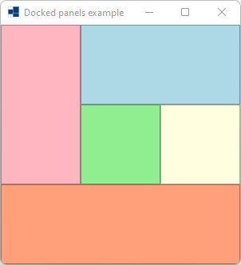
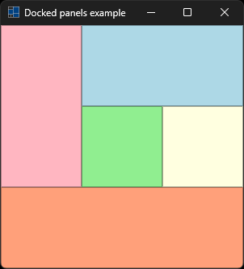
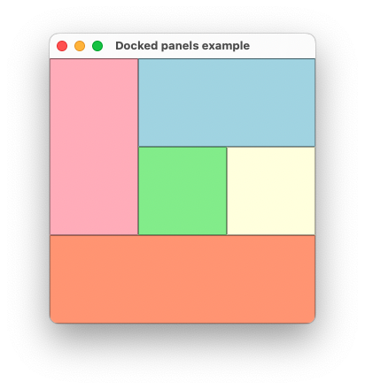
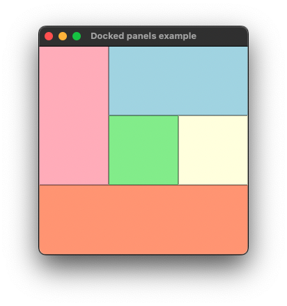
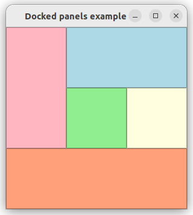
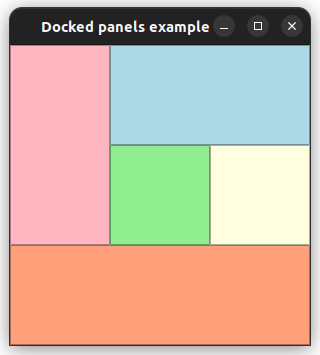

|
xtd
0.2.0
|
Loading...
Searching...
No Matches
docked_panels.cpp
demonstrates the use of xtd::forms::panel.
- Windows
- 

- macOS
- 

- Gnome
- 

#include <xtd/forms/application>
#include <xtd/forms/form>
#include <xtd/forms/panel>
using namespace xtd::drawing;
using namespace xtd::forms;
auto main() -> int {
form_main.client_size({300, 300});
panel1.back_color(color::light_green);
panel1.border_style(border_style::fixed_single);
panel1.dock(dock_style::fill);
panel2.back_color(color::light_yellow);
panel2.border_style(border_style::fixed_single);
panel2.dock(dock_style::right);
panel3.back_color(color::light_blue);
panel3.border_style(border_style::fixed_single);
panel3.dock(dock_style::top);
panel4.back_color(color::light_pink);
panel4.border_style(border_style::fixed_single);
panel4.dock(dock_style::left);
panel5.back_color(color::light_salmon);
panel5.border_style(border_style::fixed_single);
panel5.dock(dock_style::bottom);
application::run(form_main);
}
static const xtd::drawing::color light_yellow
Gets a system-defined color that has an ARGB value of 0xFFFFFFE0. This field is constant.
Definition color.hpp:284
static const xtd::drawing::color light_blue
Gets a system-defined color that has an ARGB value of 0xFFADD8E6. This field is constant.
Definition color.hpp:248
static const xtd::drawing::color light_green
Gets a system-defined color that has an ARGB value of 0xFF90EE90. This field is constant.
Definition color.hpp:263
static const xtd::drawing::color light_salmon
Gets a system-defined color that has an ARGB value of 0xFFFFA07A. This field is constant.
Definition color.hpp:269
static const xtd::drawing::color light_pink
Gets a system-defined color that has an ARGB value of 0xFFFFB6C1. This field is constant.
Definition color.hpp:266
static void run()
Begins running a standard application message loop on the current thread, without a form.
@ fixed_single
A single-line border. Same as xtd::forms::border_style::solid.
Definition border_style.hpp:56
@ bottom
The control's bottom edge is docked to the bottom of its containing control.
Definition dock_style.hpp:29
@ right
The control's right edge is docked to the right edge of its containing control.
Definition dock_style.hpp:33
@ left
The control's left edge is docked to the left edge of its containing control.
Definition dock_style.hpp:31
@ fill
All the control's edges are docked to the all edges of its containing control and sized appropriately...
Definition dock_style.hpp:35
@ top
The control's top edge is docked to the top of its containing control.
Definition dock_style.hpp:27
The xtd::drawing namespace provides access to GDI+ basic graphics functionality. More advanced functi...
Definition actions_system_images.hpp:10
The xtd::forms namespace contains classes for creating Windows-based applications that take full adva...
Definition texts.hpp:219
Represents an ordered pair of integer x- and y-coordinates that defines a point in a two-dimensional ...
Definition point.hpp:54
Stores an ordered pair of integers, which specify a height and width.
Definition size.hpp:32
Generated on Fri Jul 25 2025 05:28:23 for xtd by Gammasoft. All rights reserved.